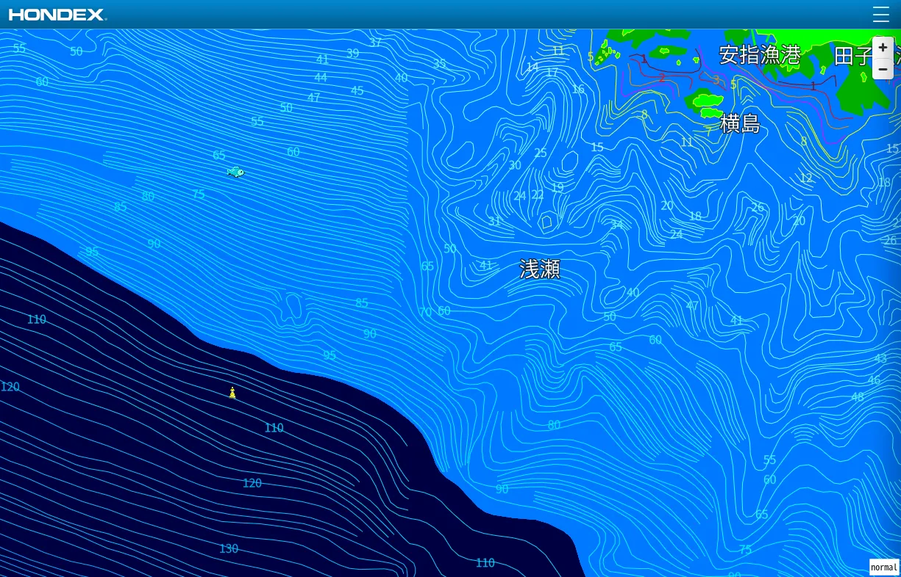

The road Orz passed by 2026 年 08 月
08 月 23 日 ( 日 )
Dive #206 串本でドリフト専門店が成り立たない話
串本でドリフトダイビングしたいなら何処のショップ行くのがベストなんだろ💦
#ダイビング
長くなるので SNS への返信には書きませんけど、「ドリフトしたいんですけどできますか？」「40m まで潜りたいんですけどできますか？」っていう電話があった場合、どの店もたいていは断ってるんですよ。
会ったこともないゲストで、そんなの危なくて受けれるはずがないので。
事故を起こされたら責任を問われるのはこっちなのもあります。なぜそんなやつを入れた！？って。
ぼくの知る限り串本ではほぼ全店安全側に寄せています。1000 本潜っていると電話口の向こうで言っていても、スキルもなにもわからない人を受け入れることはできないので。
だから X で「どこのショップを選べばよいドリフトができますか」って言っているダイバーさんのような場合は、串本ではいきなりはなかなか受け入れてもらえないっていうのが現実です。
まずは決まったサービスに通って、住崎、グラスワールド、備前、アンドの鼻、サメのヒレ、イスズミ礁、吉右衛門、中黒礁などを潜り込んでもらって、ぼくたちにあなたのスキル、知識、判断力を見せてください、あなたがそこに案内して大丈夫なダイバーなのか、その姿をぼくたちに見せてください、ってことになります。
それでやっと、それじゃぁ外洋行ってみましょうか、ってことになって、ボートに乗った人のレベルが揃い、海の条件がアンカリングよりドリフトですね、あるいはドリフトいけますけどどうします？って現場で総合的に判断したときに、そのとき初めてドリフトダイビングが行われる、それが串本での多くの店の運用になっています。
ぼくの知る限り串本では海をアミューズメントのように捉えている店は１軒もありません。
それでも稀に事故があるのが悔しいところですが。
そして以上をある SNS に投稿したところ、客を選ぶのか？という予想通りの攻撃がありました。なのでゲストの安全を最優先に案内する立場としてまとめておきます。
これまでいろんな SNS で飽きるほど何度も何度も書いてきているのですけれど、よく勘違いされるのですが、ぼくらがゲストをお断りするのは常連を優先しているわけではありません。僕らの責任だとかそういう文脈ですらない。
単純に目の前で事故で人に死なれたらキツイからです。ぼくらもただの人なので。
目の前でゲストが事故になると、ぼくらはそれに耐えるのは難しい。なのでそのゲストを大丈夫な人かチェックします。もしそのゲストが事故を起こしそうな人の場合は断ります。理由は単純で遊びに来ているのに変わり果てた姿になって無言の帰宅をされるのを防ぐためです。ただそれだけのことです。
なので断るのは、その人のもしもを考えて、その人を守るためでもあります。
これも飽きるほど何度も何度も書いてきましたけれど、意地悪をしているわけではありません。常連さんを贔屓しているわけでもありません。ゲストに死なれないためです。単なる安全管理上の要請にしか過ぎません。
悪意で持って解釈するのはかまいませんが、それは事実ではないと申し上げておきます。
実際には大半の人はぼくたちと信頼関係で繋がっていて、いろんなポイントに案内させていただいています。
その信頼関係で結びつくには早い人であれば「次の 2 本目ではちょっとおもしろいところに行きましょうか。あなたであれば問題ないと思います」となりますけど、時間がかかる人も残念ながらやはり少なくありません。
その店に通うか、もちろん他店でも構わないので、スキル、知識、判断力、自分自身の能力判断をできるようになってください、それからご相談ください、となる場合も少なくありません。
初めての人もそのような信頼関係ができるまでの時間とそれが可能となる努力はコストと割り切っていただきたいのです。
それができないのであれば、ここでは安全を保証できないのでうちでは無理です。ただ受け入れてくれるところはもしかするとあるかもしれません。そうお答えすることになります。つまりそのような場合は、よそを探してください、ということになります。
場所が海なだけにお客様は神様ですというわけにはいかないのですね。
さて、ここまでは「なぜ串本の店が、いきなりドリフトをやりたいというゲストを受け入れないのか」という話でした。
でも、実はもう一つあります。
ゲストが十分なスキルを持っていて店側も「この人なら大丈夫」と判断したとしても、だからといってドリフトができるとは限らないのです。
なぜなら、串本の海がそういう海だからです。
「ドリフトをやりたい」というゲストがいて、受け入れられるスキルのゲストがいて、船も出せる。
それでも最後に「今日はドリフトじゃないですね」となることがあります。
ここからは、串本のドリフト事情の話になります。
下の動画を見てください。たまたま見つけたものです。
笑えたというか楽しい動画です。
そうなんですよね。
串本での外洋ドリフトって流されるのはいいのですけれど、根からはずれて下はどん深 -50m 以上で、ひたすら中層を漂うブルーウォターダイブ化するってなりがちなのです。沖縄のドリフトメインのポイントとはちと違うんです。
そんな串本の海なので、串本では流れていてもアンカリングっていうのが多いんですよね。
だから「串本でドリフトができる店」なんて言われても、いや、ドリフトが成り立つ条件が串本ではいつでも成立してるわけじゃないから、って答えることになります。
この稿の始めに店の受け入れ事情に付いてい書きましたけれど、一番の問題は串本では常時ドリフトに適した海況であるわけでなく、地形の問題、潮の流れの問題のほうが圧倒的に強いといういう事情があります。
少し前に潮岬すぐそばのポイントが外洋並に流れてたときに、ゲスト連れてグラスワールド、備前、住崎をドリフトで流したなんて話もあります。珍しいことですが、海の状況によってはそんなこともあったりします。
多くの人が気がついていませんが住崎、備前、グラスワールドも実は常に流れています。中層でフィンも動かさずに中性浮力を保って浮いていると、3、 40 秒くらいで 10m くらい流されているのは実はいつものことです。
といいますか、日本のどのダイビングポイントであろうと海ですので、水は常に動いてます。
微弱であっても常に流れてます。
そうでないとスコーンと 30m 見えるなんて潮は入ってきませんから。

ちなみに画像は浅地付近の等深線図になります。海上保安庁のデータをもとにしているとのことです。
見ればわかるのですが、浅地の根を少し外れると、もう水深は -50m とか -60m になります。南に目を向けると水深は -100m をすぐに超えています。
こんな地形なのでドリフトを成り立たせるのは、どっちに流れてるのかによりますし、そもそも流れの向きが変わらなさそうなときを選ぶしかなかったりします。
ドリフト専門なんて店がないのはそういうことなんですね。外洋専門の店はありますけど。
だからぼくたちは天気と海況にお伺いを立てながら今日も潜らせてくださいね、って海にお願いする立場になります。
なので「ふざけるな！！客は神様だろ！？」と凄む方には「すいません。神様にお願いがあります。この言うことをきいてくれない海をなんとかしてもらえませんか？神様にお願いです」なんて冗談で返すしかないのですね。
- Category :
- #Records of Orz's Road
- #ダイビング
- #スクーバダイビング
- #ダイバー
- #ドラフト専門店が成り立たない理由
- #ゲストを断ることがある理由
- #和歌山県
- #串本町